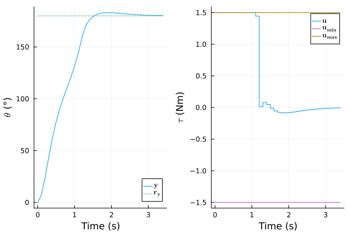
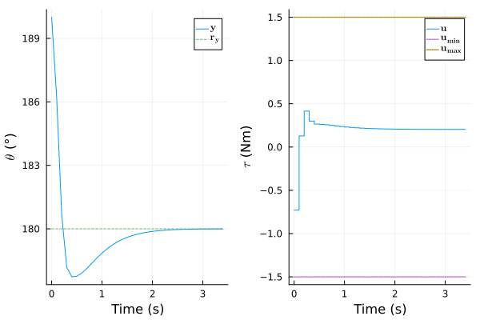
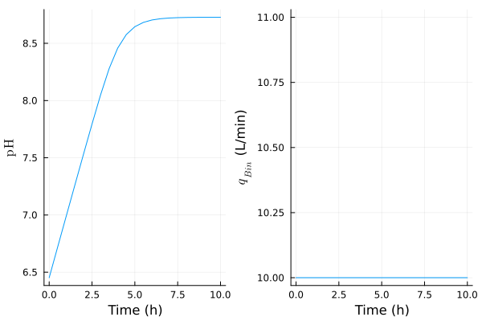

Manual: ModelingToolkit Integration
Introduction
This example integrates the simple pendulum and pH neutralization models of the penultimate section and ultimate section, respectively, in the ModelingToolkit (MTK) framework. It then extracts functions with appropriate signature to construct SimModel objects. This object is then used to design controllers similar to the previous sections.
This simple example is not an official interface to ModelingToolkit.jl. It is provided as a basic starting template to combine both packages. There is no guarantee that it will work for all corner cases. For instance, measured disturbances are not supported in the current implementation (to be added).
MTK Model Conversion
We first define two methods that convert MTK model to either a NonLinModel or a NonLinModelDAE, depending on the presence of algebraic equations. The methods rely on input-output systems. The generate_f_h_mtk method extracts the f_mtk! and h_mtk! functions from the MTK model, with combined differential states and algebraic variables in a single vector. The i_alg boolean vector indicates which elements of the state vector are algebraic variables:
using ModelPredictiveControl, ModelingToolkitusing ModelingToolkit: D_nounits as D, t_nounits as tfunction generate_f_h_mtk(model, inputs, outputs) (_, f_ip), x_sym, p_sym, io_sys = ModelingToolkit.generate_control_function( model, inputs, split=false, simplify=true ) i_alg = ModelingToolkit.is_alg_equation.(equations(io_sys)) function f_mtk!(ẋ, x, u, _ , p) try f_ip(ẋ, x, u, p, nothing) catch err if err isa MethodError error("NonLinModel does not support a time argument t in the f "* "function, see the constructor docstring for a workaround.") else rethrow() end end return nothing end (_, h_ip) = ModelingToolkit.build_explicit_observed_function( io_sys, outputs; inputs, return_inplace = true ) u_nothing = fill(nothing, length(inputs)) function h_mtk!(y, x, _ , p) try # MTK.jl supports a `u` argument in `h_ip` function but not this package. We # set `u` as a vector of nothing and `h_ip` function will presumably throw # an MethodError if this argument is used inside the function h_ip(y, x, u_nothing, p, nothing) catch err if err isa MethodError error("NonLinModel only support strictly proper systems (no "* "manipulated input argument u in the output function h)") else rethrow() end end return nothing end ic = initial_conditions(io_sys) p_map, x_map = try ( Dict(sym => ic[sym] for sym in p_sym), Dict(sym => ic[sym] for sym in x_sym) ) catch err if err isa KeyError # the key presumably appears in `bindings(io_sys)`: error("Non-constant parameter values are not supported (a.k.a. bindings)") else rethrow() end end p = ModelingToolkit.varmap_to_vars(p_map, p_sym) x = ModelingToolkit.varmap_to_vars(x_map, x_sym) return f_mtk!, h_mtk!, p_sym, p, x_sym, x, i_algendThe generate_model method then constructs an adequate SimModel object that internally separates the differential states and algebraic variables, if any, to comply with this package's interface:
function generate_model( f_mtk!::F, h_mtk!::H, Ts, i_alg, inputs, outputs, p; xs_mtk=zeros(length(i_alg)), unit="s", transcription=OrthogonalCollocation()) where {F<:Function, H<:Function} nu, ny = length(inputs), length(outputs) nx_mtk::Int = length(i_alg) na::Int = sum(i_alg) nx::Int = nx_mtk - na i_x::Vector{Int} = findall(iszero, i_alg) i_a::Vector{Int} = findall(isone, i_alg) if na > 0 function fq!(ẋ, res, x, a, u, d, p) T = promote_type(eltype(x), eltype(a), eltype(u)) ẋ_mtk, x_mtk = similar(ẋ, T, nx_mtk), similar(x, T, nx_mtk) x_mtk[i_x] .= x x_mtk[i_a] .= a f_mtk!(ẋ_mtk, x_mtk, u, d, p) ẋ .= @views ẋ_mtk[i_x] res .= @views ẋ_mtk[i_a] return nothing end function h!(y, x, a, d, p) T = promote_type(eltype(x), eltype(a)) x_mtk = similar(x, T, nx_mtk) x_mtk[i_x] .= x x_mtk[i_a] .= a h_mtk!(y, x_mtk, d, p) return nothing end xs_0, as_0 = xs_mtk[i_x], xs_mtk[i_a] model = NonLinModelDAE( fq!, h!, Ts, nu, nx, na, ny; p, unit, xs_0, as_0, transcription ) else f!, h! = f_mtk!, h_mtk! model = NonLinModel(f!, h!, Ts, nu, nx, ny; p, unit) end return model # deliberately type unstable functionendPendulum Model
We first construct and instantiate the pendulum model as a MTK System object:
@parameters g=9.8 L=0.4 K=1.2 m=0.3@variables θ(t)=0 ω(t)=0 τ(t)=0 y(t)eqs = [ D(θ) ~ ω D(ω) ~ -g/L*sin(θ) - K/m*ω + τ/m/L^2 y ~ θ * 180 / π]@named mtk_model = System(eqs, t)\[ \begin{align} \frac{\mathrm{d}\theta\left( t \right)}{\mathrm{d}t} &= \omega\left( t \right) \\ \frac{\mathrm{d}\omega\left( t \right)}{\mathrm{d}t} &= \frac{\tau\left( t \right)}{L^{2} ~ m} + \frac{ - K ~ \omega\left( t \right)}{m} + \frac{ - g ~ \sin\left( \theta\left( t \right) \right)}{L} \\ y\left( t \right) &= 57.296 ~ \theta\left( t \right) \end{align} \]
We can now convert the MTK model:
inputs, outputs = [τ], [y]f_mtk!, h_mtk!, p_sym, p, x_sym, x, i_alg = generate_f_h_mtk(mtk_model, inputs, outputs)[x_sym x]2×2 Matrix{Any}:
ω(t) 0.0
θ(t) 0.0Since MTK is an acausal modeling framework, we do not have control over the state realization chosen by the package. The content of x_sym above shows it settled for the state vector $\mathbf{x}(t) = [\begin{smallmatrix}ω(t) && θ(t)\end{smallmatrix}]'$, that is, the states of the pendulum section in the reverse order. As the same also applies to the parameters, the p_sym object informs on how the p vector is sorted:
[p_sym p]4×2 Matrix{Any}:
L 0.4
m 0.3
g 9.8
K 1.2We can now construct a SimModel with this specific state realization:
Ts = 0.1model = generate_model(f_mtk!, h_mtk!, Ts, i_alg, inputs, outputs, p)vu, vx, vy = ["\$τ\$ (Nm)"], ["\$ω\$ (rad/s)", "\$θ\$ (rad)"], ["\$θ\$ (°)"]model = setname!(model; u=vu, x=vx, y=vy)NonLinModel with a sample time Ts = 0.1 s:
├ solver: RungeKutta(4)
├ jacobian: AutoForwardDiff
└ dimensions:
├ 1 manipulated inputs u
├ 2 states x
├ 1 outputs y
└ 0 measured disturbances dAs expected, the returned model is a NonLinModel object, since the pendulum model has no algebraic equations. We also instantiate a plant model with a 25 % larger friction coefficient $K$:
i_K = findfirst(==("K"), string.(p_sym))p2 = copy(p)p2[i_K] = 1.25*p[i_K]plant = generate_model(f_mtk!, h_mtk!, Ts, i_alg, inputs, outputs, p2)plant = setname!(plant; u=vu, x=vx, y=vy)NonLinModel with a sample time Ts = 0.1 s:
├ solver: RungeKutta(4)
├ jacobian: AutoForwardDiff
└ dimensions:
├ 1 manipulated inputs u
├ 2 states x
├ 1 outputs y
└ 0 measured disturbances dPendulum Controller Design
We can then reproduce the Kalman filter and the controller design of the penultimate section by reversing the order of σQ vector, because of the different state realization:
α=0.01; σQ=[1.0, 0.1]; σR=[5.0]; nint_u=[1]; σQint_u=[0.1]estim = UnscentedKalmanFilter(model; α, σQ, σR, nint_u, σQint_u)Hp, Hc, Mwt, Nwt = 20, 2, [0.5], [2.5]nmpc = NonLinMPC(estim; Hp, Hc, Mwt, Nwt, Cwt=Inf)umin, umax = [-1.5], [+1.5]nmpc = setconstraint!(nmpc; umin, umax)NonLinMPC controller with a sample time Ts = 0.1 s:
├ estimator: UnscentedKalmanFilter
├ model: NonLinModel
├ optimizer: Ipopt
├ transcription: SingleShooting
├ gradient: AutoForwardDiff
├ jacobian: AutoForwardDiff
├ hessian: nothing
└ dimensions:
│ ├ 20 prediction steps Hp
│ ├ 2 control steps Hc
│ ├ 1 manipulated inputs u (1 integrating states)
│ ├ 3 estimated states x̂
│ ├ 1 measured outputs ym (0 integrating states)
│ ├ 0 unmeasured outputs yu
│ └ 0 measured disturbances d
└ optimization:
├ 2 decision variables Z̃ (0 slack variable, 0 bounds)
├ 40 linear inequality constraints A (0 custom)
├ 0 linear equality constraints Aeq
├ 0 nonlinear inequality constraints g (0 custom)
└ 0 nonlinear equality constraints geqThe 180° setpoint response is identical:
using PlotsN = 35res_ry = sim!(nmpc, N, [180.0], plant=plant, x_0=[0, 0], x̂_0=[0, 0, 0])end #p = plot(res_ry)
and also the output disturbance rejection:
res_yd = sim!(nmpc, N, [180.0], plant=plant, x_0=[0, π], x̂_0=[0, π, 0], y_step=[10])p = plot(res_yd)
Neutralization Reactor Model
The MTK model of the neutralization reactor from the last section is constructed as follows:
@parameters c_Ain=0.1 c_Bin=0.1 Kw=1e-14 Ka=1.75e-5 V=1000 q_Ain=10@variables c_A(t)=0.025 c_B(t)=0.025 q_Bin(t)=10 pH(t)=7.0@variables q_out(t) c_Aout(t) c_Bout(t)eqs = [ D(c_A) ~ 60/V*(q_Ain * c_Ain - q_out * c_Aout) D(c_B) ~ 60/V*(q_Bin * c_Bin - q_out * c_Bout) 0 ~ 10^(-pH) + c_B - (Kw / 10^(-pH)) - (Ka * c_A / (Ka + 10^(-pH))) q_out ~ q_Ain + q_Bin c_Aout ~ c_A c_Bout ~ c_B]@named mtk_model = System(eqs, t)\[ \begin{align} \frac{\mathrm{d}\mathtt{c\_A}\left( t \right)}{\mathrm{d}t} &= \frac{60 ~ \left( \mathtt{c\_Ain} ~ \mathtt{q\_Ain} - \mathtt{c\_Aout}\left( t \right) ~ \mathtt{q\_out}\left( t \right) \right)}{V} \\ \frac{\mathrm{d}\mathtt{c\_B}\left( t \right)}{\mathrm{d}t} &= \frac{60 ~ \left( \mathtt{c\_Bin} ~ \mathtt{q\_Bin}\left( t \right) - \mathtt{c\_Bout}\left( t \right) ~ \mathtt{q\_out}\left( t \right) \right)}{V} \\ 0 &= 10^{ - \mathtt{pH}\left( t \right)} + \mathtt{c\_B}\left( t \right) + \frac{ - \mathtt{Kw}}{10^{ - \mathtt{pH}\left( t \right)}} + \frac{ - \mathtt{Ka} ~ \mathtt{c\_A}\left( t \right)}{\mathtt{Ka} + 10^{ - \mathtt{pH}\left( t \right)}} \\ \mathtt{q\_out}\left( t \right) &= \mathtt{q\_Ain} + \mathtt{q\_Bin}\left( t \right) \\ \mathtt{c\_Aout}\left( t \right) &= \mathtt{c\_A}\left( t \right) \\ \mathtt{c\_Bout}\left( t \right) &= \mathtt{c\_B}\left( t \right) \end{align} \]
The substitution $a_H = 10^{-\mathrm{pH}}$ is explicitly applied in the algebraic equation to improve the numerical conditioning of the system. The converted model is:
inputs, outputs = [q_Bin], [pH]f_mtk!, h_mtk!, p_sym, p, x_sym, x, i_alg = generate_f_h_mtk(mtk_model, inputs, outputs)[x_sym x]3×2 Matrix{Any}:
c_B(t) 0.025
c_A(t) 0.025
pH(t) 7.0The content of x_sym shows that it chose for the combined state and algebraic vector $[\begin{smallmatrix}c_B(t) && c_A(t) && \mathrm{pH}(t)\end{smallmatrix}]'$. The states are thus in the reverse order of the last section. The order of the parameters is:
[p_sym p]6×2 Matrix{Any}:
c_Ain 0.1
q_Ain 10.0
V 1000.0
c_Bin 0.1
Kw 1.0e-14
Ka 1.75e-5We can now construct a SimModel with this realization:
Ts, unit = 0.5, "h"xs_mtk = xtranscription = TrapezoidalCollocation()model = generate_model( f_mtk!, h_mtk!, Ts, i_alg, inputs, outputs, p; xs_mtk, unit, transcription)vu = [raw"$q_{Bin}$ (L/min)"]vx, vy = [raw"$c_B$ (mol/L)", raw"$c_A$ (mol/L)"], [raw"$\mathrm{pH}$"]model = setname!(model, u=vu, y=vy, x=vx)NonLinModelDAE with a sample time Ts = 0.5 h:
├ state optimizer: Ipopt
├ output optimizer: Ipopt
├ transcription: TrapezoidalCollocation
├ jacobian: AutoForwardDiff
├ hessian: nothing
└ dimensions:
│ ├ 1 manipulated inputs u
│ ├ 2 states x
│ ├ 1 algebraic variables a
│ ├ 1 outputs y
│ └ 0 measured disturbances d
└ optimization:
├ 4 decision variables Z
├ 0 linear equality constraints Aeq
└ 4 nonlinear equality constraints geqThe returned value is a NonLinModelDAE object, as expected. The transient response is identical to the first 10 hours of the open-loop simulations of the last section:
using Plotsu, x_0 = [10.0], [0.0495, 0.0505]N = 21res = sim!(model, N, u; x_0)p = plot(res)
Acknowledgement
Authored by 1-Bart-1 and baggepinnen, thanks for the contribution.